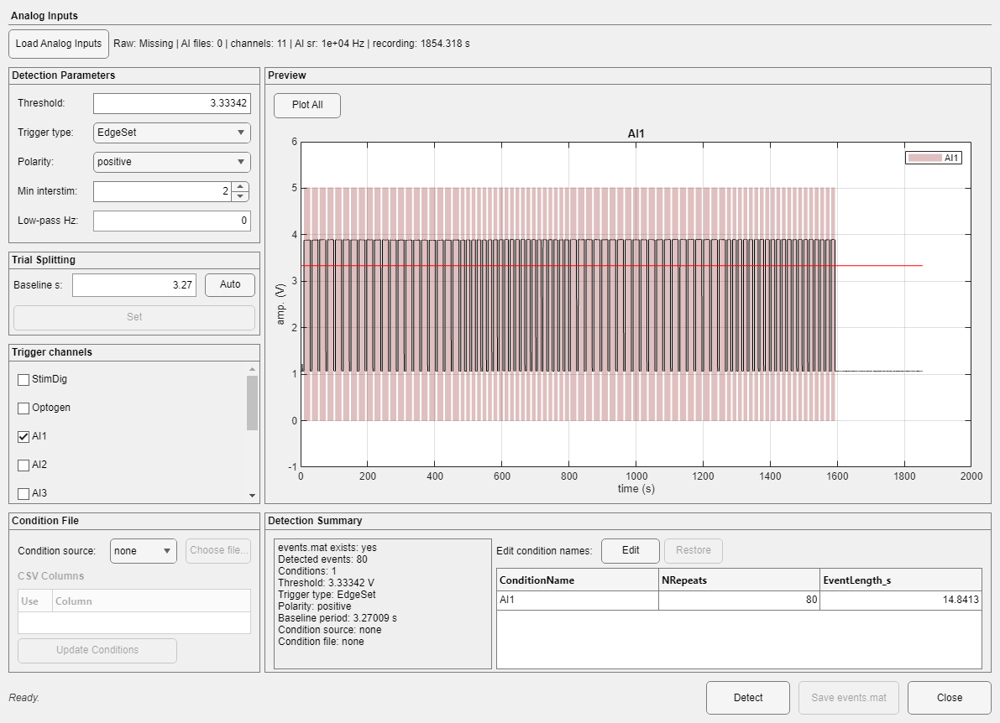

Events Manager detects experimental triggers, assigns condition names, chooses trial baselines, and writes the events.mat file used for overlays and event-aligned analysis.
Open continuous .dat data and choose Utilities > Events Manager. DataViewer passes the Save Folder and the Raw Folder when available. Manual loading remains possible when the Raw Folder is missing.

| Group | Controls and meaning |
|---|---|
| Analog Inputs | Load Analog Inputs reads analog sources; the status lists sampling rate, channels, and duration. |
| Detection Parameters | Threshold (or auto), Trigger type, Polarity, Min interstim, and optional Low-pass Hz. |
| Trial Splitting | Baseline s, Auto, and Set establish the pre-event period. |
| Trigger channels | Selects one or more analog channels used for detection. |
| Condition File | none, CSV, or supported external parser; CSV columns can be selected before Update Conditions. |
| Preview | Plots signal, threshold, detected intervals, and all selected channels. |
| Condition names | Edit/Apply changes names in memory; Restore returns to the original list or cancels editing. |
| Detect | Applies parameters and rebuilds detected events. |
| Save events.mat | Writes validated current event state, asking before replacement. |
Unsaved changes
Closing with unsaved event edits asks for confirmation. DataViewer does not silently write event metadata.
Field definitions are in Events.